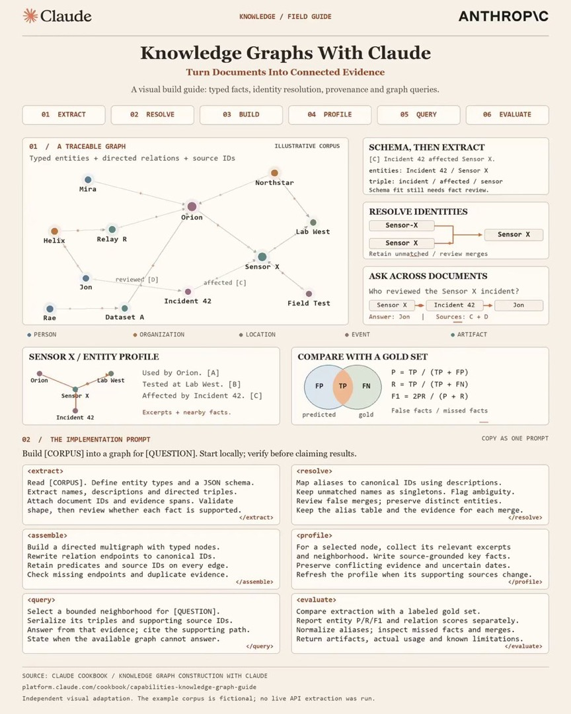
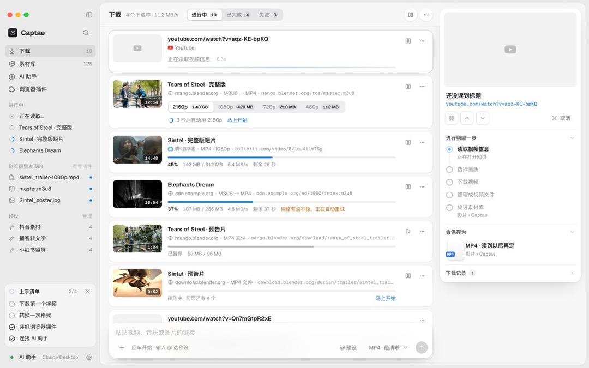
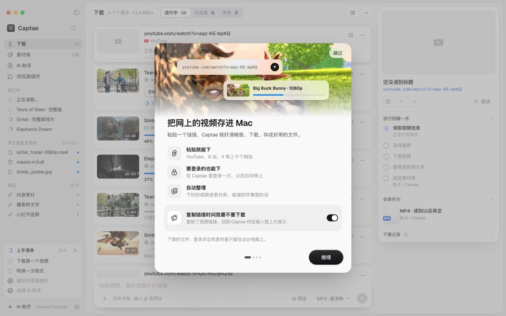
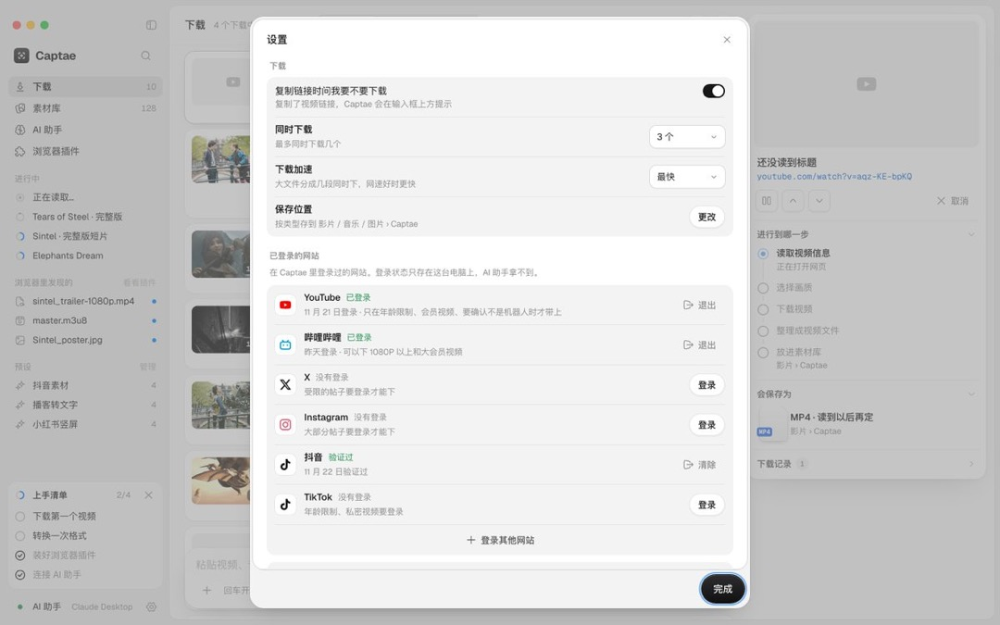
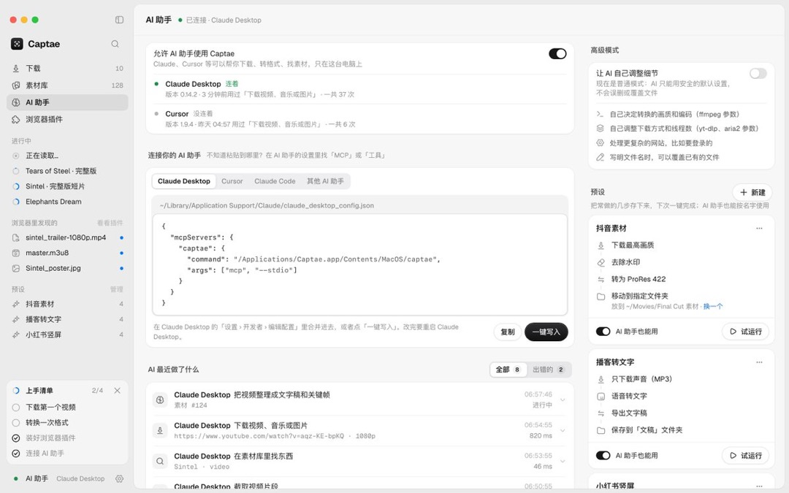
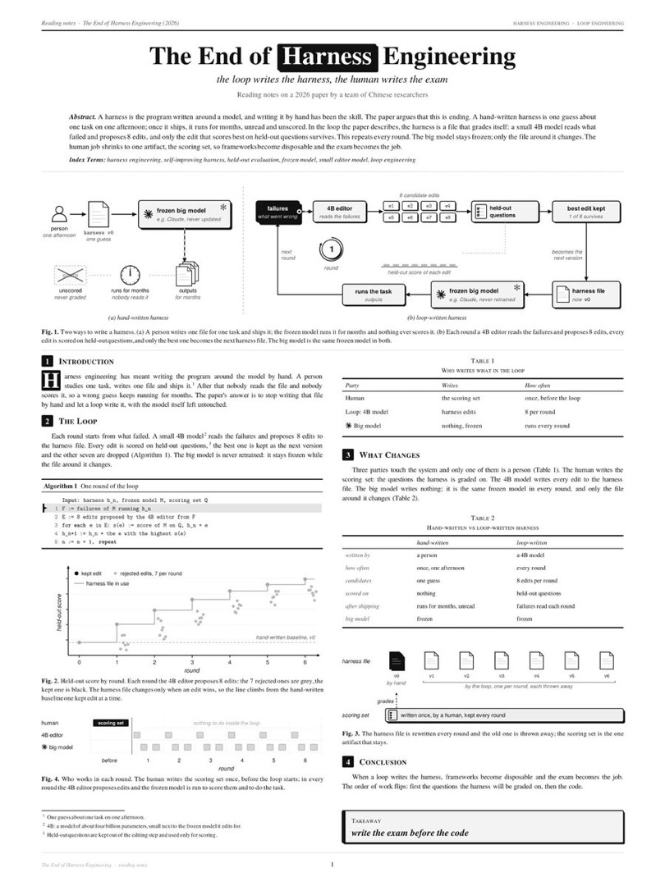

本期速览
02 Anthropic 发布文档图谱第二大脑工作流
04 Jev 决策模型驱动多类 Agent 工具
06 论文提出用 4B 编辑器自动演化 Harness
07 单一写入源原则消除同步冲突
01｜Carbon 搭配 Neon 降低编排低级错误
来源（X） · @KennethCanyon · 2026-11-26 10:48
核心还是同家族模型之间的磨合优势：
无跨语系翻译损耗：不同模型后训练出来的拆解习惯不一样。Opus 5.5 下发任务是有很强的 Claude 隐式直觉，换 Neon 接手容易漏掉隐含约束；说白了就是两家模型的默认潜规则不一样，Carbon 写的 spec 和边界条件，刚好可能是Neon 的区间里。
护栏一致：干活模型出 bug，很多时候是总控把话说漏了。Carbon 和 Neon 同源，知道哪些地方容易踩坑，拆任务的时候就规避了这些坑。
上下文无损交接：处理大代码库时，Carbon 怎么筛上下文喂给下游，Neon 接起来几乎没有信息断层。
Gemini这波翻盘确实漂亮。就是antigravity团队之前太躺了，差的有点过分了。
02｜Anthropic 发布文档图谱第二大脑工作流
来源（X） · @thedelost · 2026-11-28 05:38
中文译文
这篇 Anthropic 的论文简直是纯金……
Anthropic 的工程师发布了一份图工程蓝图，可以把你的遗忘文件变成 Claude 真正能用的第二大脑
研究论文。项目笔记。会议记录。埋在你从不打开的文件夹里的决策
你已经收集了信息。有用的关联仍然埋藏在各个文件之中
这个工作流把它们汇聚到一起：
文档 → 实体 → 关系 → 图 → 检索 → 有出处的回答
这份文档中的 6 个步骤：
第 1 步 → 提取事实
从你的文档中提取人物、项目、工具和事件。为每个关系附加来源 ID 和证据，以便你能追溯回去
第 2 步 → 解析身份
“Sensor-X”和“Sensor X”可能是同一个东西。合并确认的匹配项，标记不确定的项，并将不同的实体保持分开
第 3 步 → 连接图
保留谁对谁做了什么，以及你在哪里找到的。跨文件追踪关系，而不是手动拼凑一切
第 4 步 → 构建实体画像
选择一个项目、人物或工具。收集其相关摘录和附近的事实，形成一个有依据的画像。保持冲突证据可见
第 5 步 → 检索关联证据
将一个受影响的组件追踪到一个事件，再追踪到它的审核人。合并来自不同文档的支持性事实，并引用答案背后的来源
第 6 步 → 捕捉错误
把下面的提示词连同你的文档和一个目标放进 Claude Code。从一个文件夹开始，检查提取的事实，然后扩展
如果你正在构建研究助手或 AI 第二大脑，把这个留到你下一次构建时用。让你已经保存的信息发挥作用
保存这个，然后阅读下面的文章 ↓
原文
this Anthropic paper is pure gold...
Anthropic's engineers released a graph engineering blueprint for turning your forgotten files into a second brain Claude can actually use
research papers. project notes. meeting transcripts. decisions buried in folders you never open
you've already collected the information. the useful connections are still buried across files
this workflow brings them together:
documents → entities → relationships → graph → retrieval → sourced answer
the 6 moves in this doc:
step 1 → extract facts
pull people, projects, tools and events out of your documents. attach source IDs and evidence to every relationship so you can trace it back
step 2 → resolve identities
"Sensor-X" and "Sensor X" might be the same thing. merge confirmed matches, flag uncertain ones and keep distinct entities separate
step 3 → connect the graph
preserve who did what, to whom, and where you found it. follow relationships across files instead of manually piecing everything together
step 4 → build entity profiles
pick a project, person or tool. collect its relevant excerpts and nearby facts into a grounded profile. keep conflicting evidence visible
step 5 → retrieve connected evidence
trace an affected component to an incident, then to its reviewer. combine the supporting facts from different documents and cite the sources behind the answer
step 6 → catch the mistakes
drop the prompt below into Claude Code with your documents and a goal. start with one folder, inspect the extracted facts, then expand
if you're building a research assistant or AI second brain, keep this beside your next build. put the information you've already saved to work
save this, then read the article below ↓

引用内容
Hanako @hanakoxbt
中文译文
原文
03｜Captae 支持多平台视频无损下载与检索
来源（X） · @solllin · 2026-11-28 15:46
YouTube / B 站 / X / 抖音 / TikTok / INS 全部支持无损下载，支持 B 站选 P、直播随时录
自动进本地素材库，本机离线转文稿，搜一句台词就能找回视频
支持一键接入本地Agent，一句话帮你下载整理视频
剪片段、拼接、换音轨、烧字幕，一站搞定
macOS (Apple 芯片) / Windows / Linux 全平台支持
GitHub 仓库：https://github.com/sol1560/Captae




04｜Jev 决策模型驱动多类 Agent 工具
来源（X） · @GitTrend0x · 2026-11-27 21:30
machinepulse-ai 的 karpo 双系统浏览器、Yupol02 的 JevClaude 手机测试员、marcelocruzrpa 的 UiPath 故障自愈流水线、basaltbytes 的 Rondyr 表单防垃圾、cobusgreyling 的决策模型实战菜谱……全网玩家把 Jev 玩成了下一代「网页点击手 + 真机测试员 + 故障分诊台 + 表单门卫 + 客服分流教程」:
1️⃣ machinepulse-ai/karpo-browser（https://github.com/machinepulse-ai/karpo-browser）
给 AI Agent 用的浏览器，把活一分为二：决策模型当「System 1」，每一步从页面自己的编号选项里选一个动作，点击、输入、选择、滚动；你的 Agent 当「System 2」，负责规划、读页面和回答。默认用 OpenRouter 上的 typesafe/jev-1.14，也能接自己服务器上的模型。付款、预订或不可撤回的操作会停下来等批准，密码和卡号按名字填进页面，不经过任何模型。Claude Code 插件、Codex、任意 MCP 客户端都能接。160 星。
“大模型负责想，决策模型负责点”！
2️⃣ Yupol02/jevclaude（https://github.com/Yupol02/jevclaude）
给 Claude Code 做手机 App 测试又不烧 token：Claude 把要测的流程写成一份简短计划，JevClaude 一次调用在手机上跑完，只回结果。能用规则判的不用模型，剩下「点哪个元素、这步过没过、有没有报错、操作危不危险」交给 Jev，每次约 200 ms；重跑走回放缓存，购买、删除、发送这类危险操作默认拦截。作者在三星计算器上同手机同任务实测：中位 4.9 秒、约 0.00013 美元，直接让 Claude Code 跑要 52.6 秒、约 0.19 美元。Android 已真机验证，iOS 还在实验。
“小决定交给 Jev，Claude 只管拿主意”！
3️⃣ marcelocruzrpa/uipath-autofix（https://github.com/marcelocruzrpa/uipath-autofix）
UiPath 机器人任务一出故障，流水线自动收集任务、日志和近期记录，先让 Jev 当分诊台：不用管、要调查、还是要改代码，再顺手选该派 Sonnet 还是 Opus。之后 Claude Code 在没有写权限的环境里诊断、修复，最后由唯一有写权限的步骤开 PR、开 issue 或只在运行摘要里留记录。Jev 连不上就退回「调查 + Sonnet」，自带评测集，可回放录好的答案不调用接口。
“机器人半夜崩了，先分诊，再派对的模型去修”！
4️⃣ basaltbytes/rondyr（https://github.com/basaltbytes/rondyr）
自托管的网站表单后端，全部跑在你自己的 Cloudflare 账号里：表单提交过来先存下，再用 Jev（默认）或 OpenAI Decisions 判断是不是垃圾信息、推销，跟你的业务相不相关，合格的转发到邮箱或 webhook。它从不因为模型的猜测删信，拿不准的放进「待审核」并写明原因，等人来放行或归档。一键部署到 Cloudflare，免费版就能试。作者标明目前是 pre-alpha。
“垃圾留言先拦下，拿不准的交给人”！
5️⃣ cobusgreyling/decision-model-cookbook（https://github.com/cobusgreyling/decision-model-cookbook）
一份决策模型实战菜谱：10 条客服消息，每条一次调用，一次带 8 个问题，一小段规则把答案变成转给哪个团队、拆单、拦截或关闭。作者 11 月 25 日用 jev-1.13.0 跑了一遍，门槛事先写好、事后不改，10 条全部判对，但也写明只是桌面检查不是基准测试。同一条消息，8 个问题合成一次调用约 355 ms，分开 8 次约 2,943 ms。Python 3.11 直接跑，不用安装。
“一次问清 8 件事，让代码按概率拍板”！
05｜Vivix W1.2 支持 2K 视频生成
来源（X） · @VivixLabs_HQ · 2026-11-28 02:19
中文译文
Vivix W1.2 已上线 2K 版本。
每秒 $0.015，$15 就能获得 100 个十秒视频，全部都是 2K。
一个 15 秒的片段在 20 秒内就能准备好。
看到微妙的表情、自然的皮肤纹理和精细的织物细节，配合流畅的镜头运动和高参考保真度。
亲自试试 → http://platform.vivix.ai
原文
Vivix W1.2 is live in 2K.
At $0.015/sec, $15 gets you 100 ten-second videos, all in 2K.
And a 15s clip is ready in under 20 seconds.
See subtle expressions, natural skin texture, and fine fabric detail, with fluid camera movement and high reference fidelity.
Try it yourself → http://platform.vivix.ai
06｜论文提出用 4B 编辑器自动演化 Harness
来源（X） · @damkina7 · 2026-11-27 21:30
中文译文
这篇论文绝对令人脑洞大开！
中国研究人员发表了一篇 6 页的论文，其标题应该让每一位 AI agent 构建者停下来思考：
“Harness 工程的终结”
核心论点非常残酷：
手写的 harness 只是某个人在某个下午的一次猜测，被发布到生产环境，然后几个月无人问津。
这篇论文提出了一种架构反转：
大模型保持 100% 冻结。harness 围绕它自主演化。
以下是确切的 4 步循环：
→ 第 1 步：运行时执行失败被捕获为结构化追踪
→ 第 2 步：一个轻量级 4B 编辑器读取出错内容并生成 8 个候选 harness diff
→ 第 3 步：所有 8 个候选方案在一个留出评估套件上执行
→ 第 4 步：唯一得分最高的修改存活到 v(n+1)；其余 7 个被删除
为什么这颠覆了软件工程：
1. 框架变成一次性的
你不再维护脆弱的编排框架。harness 每一轮都由一个 4B 参数的编译器重写。
2. 人的工作缩小到一个产物
你不再编写 agent 逻辑或调整提示词。你唯一的输出是评分集：真值基准问题。
3. 考试就是工作
如果你无法衡量差异，你就无法构建 harness。竞争优势从你写 agent 代码的能力转移到你设计评估关卡有多严格。
一句话总结：
停止为 agent 写代码。先写考试，让循环来写 harness。
阅读下面的完整论文拆解 ↓
原文
this paper is absolutely mind-blowing!
Chinese researchers have published a 6-page paper with a title that should give every AI agent builder pause:
"The End of Harness Engineering"
the core thesis is brutal:
a hand-written harness is just one human guess on one afternoon, shipped to production and left unread for months.
the paper proposes an architectural inversion:
the big model stays 100% frozen. the harness evolves around it autonomously.
here is the exact 4-step loop:
→ step 1: runtime execution failures get captured into structured traces
→ step 2: a lightweight 4B editor reads what broke and generates 8 candidate harness diffs
→ step 3: all 8 candidates are executed against a held-out evaluation suite
→ step 4: the single highest-scoring edit survives into v(n+1); the other 7 are deleted
why this flips software engineering upside-down:
1. frameworks become disposable
you stop maintaining brittle orchestration frameworks. the harness is rewritten every round by a 4B parameter compiler.
2. the human job shrinks to one artifact
you no longer write agent logic or tweak prompts. your only output is the scoring set: the ground-truth benchmark questions.
3. the exam is the job
if you can't measure the delta, you can't build the harness. competitive advantage shifts from how well you write agent code to how rigorously you design evaluation gates.
the takeaway in one sentence:
stop writing code for the agent. write the exam first, let the loop write the harness.
read the full paper teardown below ↓

引用内容
damkin @damkina7
中文译文
原文
07｜单一写入源原则消除同步冲突
来源（X） · @XiaotiaoWang · 2026-11-28 19:50
解决同步冲突的终极架构原则极其简单：任何一份数据，永远只允许有一个唯一写入源（Single Source of Truth）：
1、明确谁是主库、谁是只读投影：比如本地 SQLite 拥有正文和排期，线上云端只做只读展示；而用户在云端点击的“审核决定”则唯一归云端 D1 拥有，本地只拉取不反写
2、不同字段分权归属，绝不在同一字段上搞双向自由覆盖
3、每次同步带明确版本修订号（Revision），检测到远端比本地新时立刻拒绝覆盖并提示人工合并
架构边界一划清，90% 的诡异同步 Bug 直接消失。